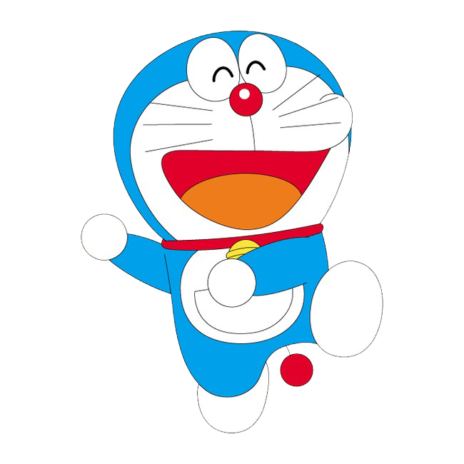
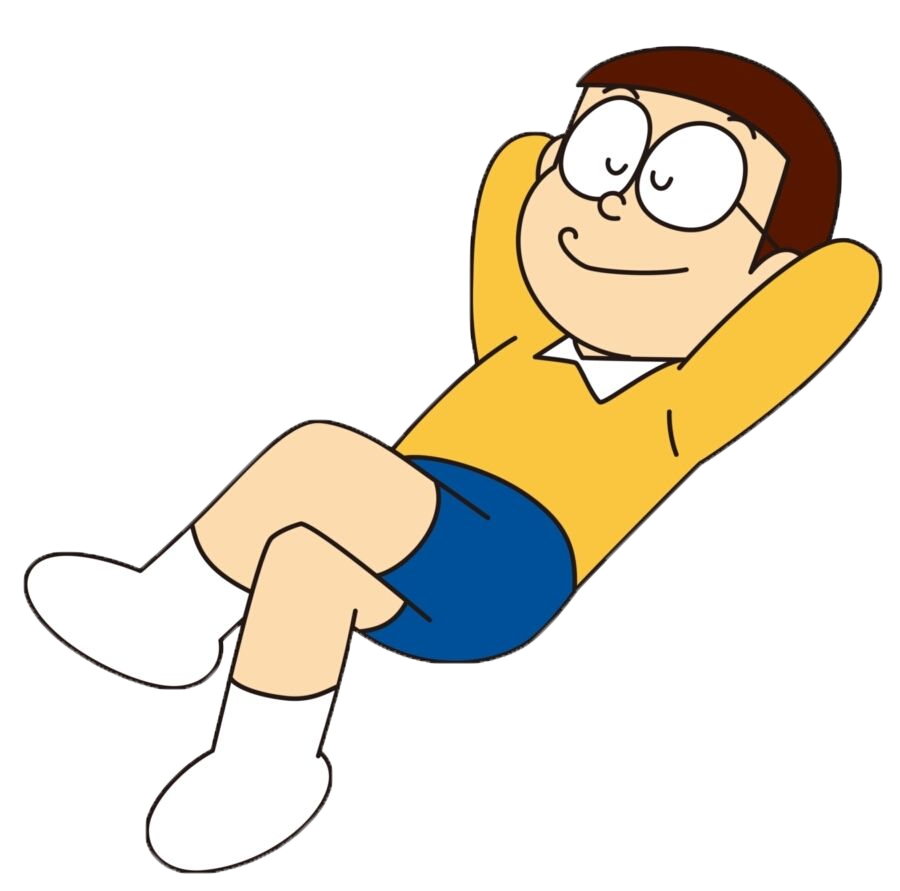
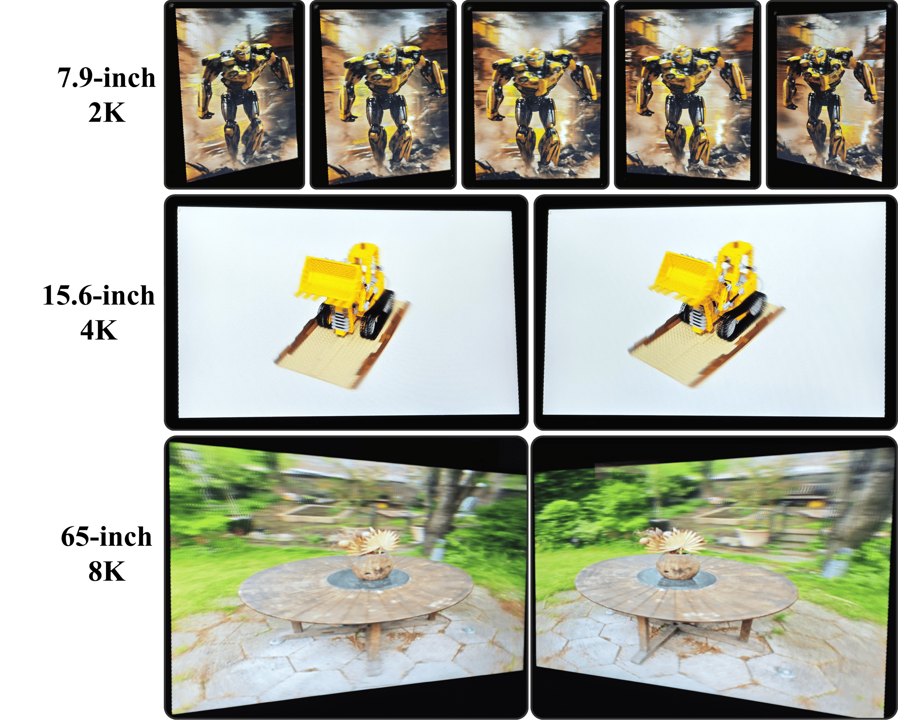
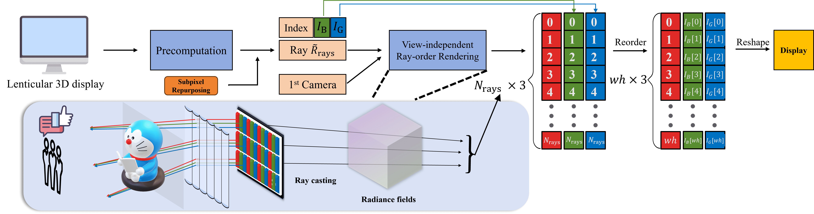
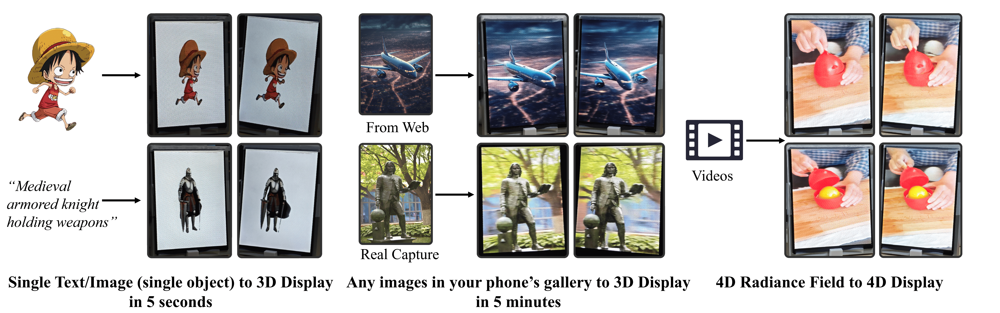

DirectL: Efficient Radiance Fields Rendering for 3D Light Field Displays

Make Radiance Fields Naked-eye-3D


Make Radiance Fields Naked-eye-3D
Real footage from an 8K 65-inch 3D display showing the classic "Garden" scene.
Autostereoscopic display technology has faced limited adoption due to the complexity of 3D content creation. While Radiance Fields have revolutionized 3D reconstruction and content generation, their integration with Light Field Displays (LFDs) remains challenging, particularly in real-time rendering scenarios that require multiple high-resolution views. We present DirectL, a novel rendering paradigm that bridges this gap. By analyzing the mapping between spatial rays and screen subpixels, and introducing subpixel repurposing techniques, DirectL significantly reduces rendering requirements. Our method, compatible with both Neural Radiance Fields (NeRFs) and 3D Gaussian Splatting (3DGS), achieves up to 40x faster rendering compared to traditional approaches while maintaining visual quality. DirectL's process-only modifications enable seamless integration with existing radiance field applications, demonstrating the practical potential of combining LFDs with modern 3D content creation techniques.

Real footage from 3D displays of different sizes.

Overview of the DirectL framework. The pipeline includes offline ray configuration calculation, real-time ray parameters determination, view-independent rendering, and channel reordering for direct display output.

Integration of DirectL with downstream radiance field applications, showcasing the synergy between 3D displays and radiance field technologies.
2D Photo to 3D Conversion
4D Scene Reconstruction
Web-based 2D to 3D Generation
Note: For readers without 3D displays, VR video is the most effective way we could think of to demonstrate the 3D effect. The stereoscopic videos were captured using iPhone 15 Pro, so please bear with us!
@article{directL2024,
title={DirectL: Towards Real-Time Rendering of Radiance Fields on Light Field Displays},
author={Author Names},
journal={arXiv preprint},
year={2024}
}
We also provide hardware and software solutions for glasses-free 3D displays of all sizes!